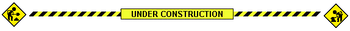

About Me
Hello! I am Phil Watson and welcome to my website, which has information on some of the projects I have worked on and the hobbies I enjoy. I am currently studying Electrical and Computer Engineering at Worcester Polytechnic Institute, however I love learning about anything I can! Outside of class, I love working on team projects and personal projects that range from clocks to robotics to electric cars. I also love cycling, bikepacking, photography, underwater hockey, disc golf, board games, hiking, and basically anything that gets me moving.